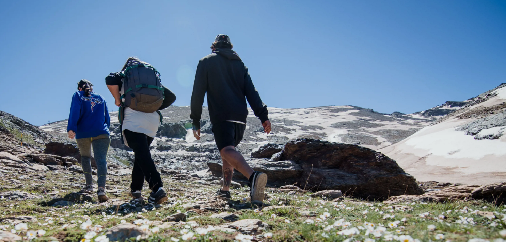
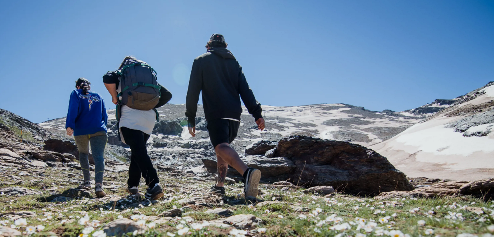

Senderismo en Sierra Nevada 2024
Detalles:
- Fecha: 12 de marzo de 2024
- Precio: 25€ por persona
- Dificultad: Media
- Distancia: 10 km
- Duración: 5 horas
Descripción de la actividad:
Sumérgete en la maravilla natural de Sierra Nevada a través de una inolvidable
jornada de senderismo. Este viaje te llevará por algunos de los paisajes más
impresionantes que ofrece la montaña más alta de la península ibérica. Desde
valles cubiertos de exuberante vegetación hasta picos majestuosos que se elevan
hacia el cielo, cada paso que des te llevará más cerca de la belleza indomable
de la naturaleza.
Comenzando desde el encantador pueblo de montaña, nuestro recorrido nos llevará
a través de antiguos senderos que serpentean entre bosques de pinos y robles
centenarios. A medida que ascendemos, seremos recibidos por vistas panorámicas
que quitan el aliento, con vistas a las imponentes cumbres nevadas que se elevan
en el horizonte.
Nuestro guía experto nos llevará a lugares de interés histórico y natural a lo
largo del camino. Podremos descubrir antiguas ruinas moriscas, cuevas ocultas
que cuentan historias de tiempos pasados, y manantiales cristalinos que brotan
de las entrañas de la montaña. Cada rincón de Sierra Nevada está impregnado de
historia y misterio, y cada paso nos acerca más a su corazón salvaje y prístino.
Material necesario:
Para disfrutar plenamente de esta experiencia, es importante estar preparado.
Aquí tienes una lista de material necesario que te recomendamos llevar contigo:
- Botas de senderismo
- Agua y comida
- Gorra y protector solar
- Mochila
Reserva tu plaza:
¿Listo para embarcarte en esta aventura? ¡Reserva tu plaza ahora mismo y únete a
nosotros en este emocionante viaje a través de la majestuosidad de Sierra Nevada!
Para más información y reservas, contáctanos a través del correo electrónico
info@senderismosierranevada.com o llámanos al +34 123 456 789.

 
